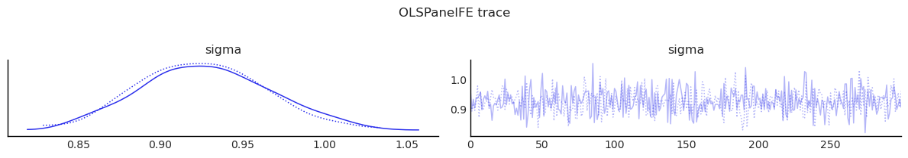
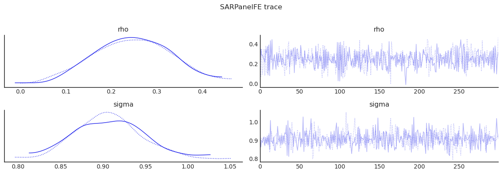
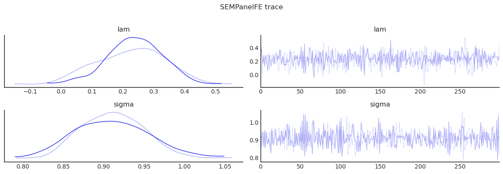
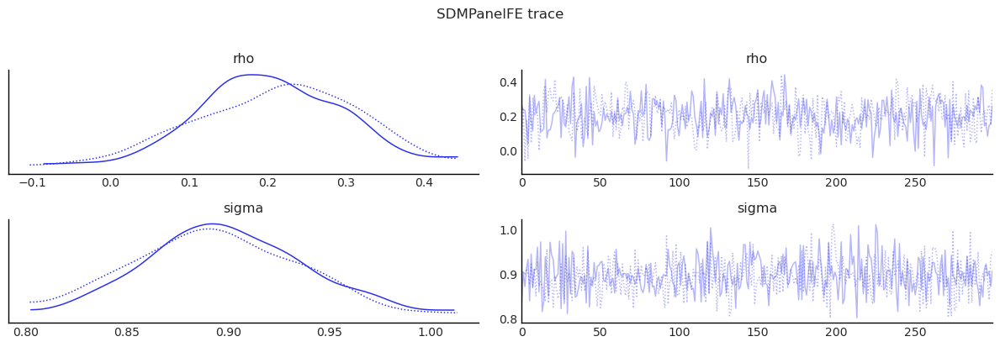
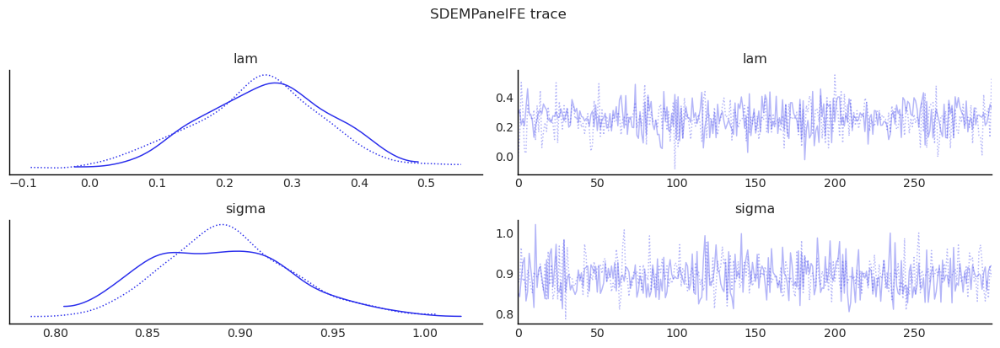
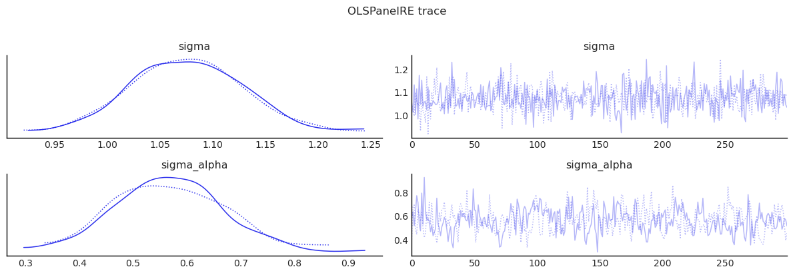
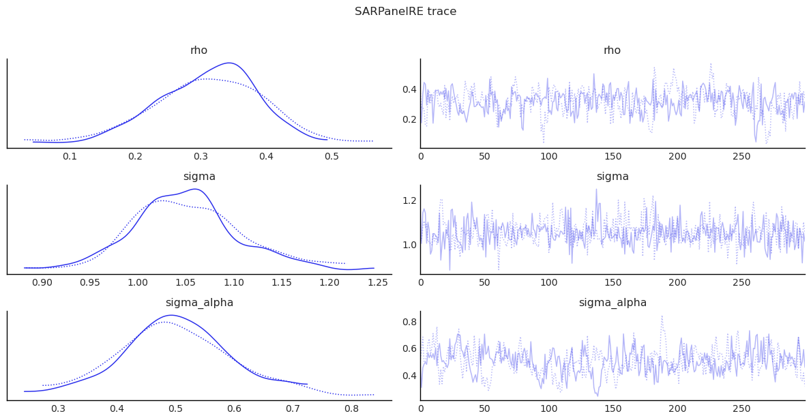
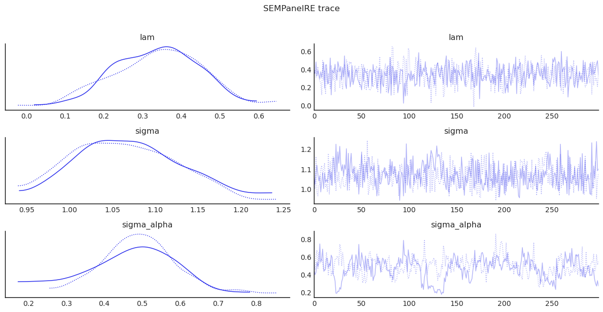

Bayesian Spatial Panel Models and Diagnostics¶
This notebook demonstrates the panel-model classes in bayespecon:
Fixed effects / pooled panel models:
OLSPanelFE,SARPanelFE,SEMPanelFE,SDMPanelFE,SDEMPanelFERandom effects panel models:
OLSPanelRE,SARPanelRE,SEMPanelRE
It also demonstrates diagnostics inspired by the MATLAB reference code:
rdiagnose-style influence diagnosticsBreusch-Pagan test
ARCH test
Ljung-Box Q test
Panel-specific diagnostics (
panel_residual_structure,pesaran_cd_test)
Panel Model Equations¶
Let observations be stacked by time, then unit (panel_g convention).
Fixed-effects / pooled classes:
OLS panel: \(y_{it} = x_{it}'\beta + a_i + \tau_t + \epsilon_{it}\)
SAR panel: \(y_{it} = \rho (Wy)_{it} + x_{it}'\beta + a_i + \tau_t + \epsilon_{it}\)
SEM panel: \(y_{it} = x_{it}'\beta + a_i + \tau_t + u_{it},\; u_{it}=\lambda (Wu)_{it}+\epsilon_{it}\)
SDM panel: \(y_{it} = \rho (Wy)_{it} + x_{it}'\beta + (Wx)_{it}'\theta + a_i + \tau_t + \epsilon_{it}\)
SDEM panel: \(y_{it} = x_{it}'\beta + (Wx)_{it}'\theta + a_i + \tau_t + u_{it},\; u_{it}=\lambda (Wu)_{it}+\epsilon_{it}\)
Random-effects classes:
OLS random effects: \(y_{it} = x_{it}'\beta + \alpha_i + \epsilon_{it},\; \alpha_i \sim N(0, \sigma_\alpha^2)\)
SAR random effects: \(y_{it} = \rho (Wy)_{it} + x_{it}'\beta + \alpha_i + \epsilon_{it},\; \alpha_i \sim N(0, \sigma_\alpha^2)\)
SEM random effects: \(y_{it} = x_{it}'\beta + \alpha_i + u_{it},\; u_{it}=\lambda (Wu)_{it}+\epsilon_{it},\; \alpha_i \sim N(0, \sigma_\alpha^2)\)
The model argument selects the pooled or fixed-effects specification for the FE classes:
0pooled1unit FE2time FE3two-way FE
The RE classes are hierarchical models with unit-level random intercepts, so they internally use the pooled design and estimate sigma_alpha directly.
import pathlib
import sys
import arviz as az
import matplotlib.pyplot as plt
import numpy as np
import pandas as pd
from IPython.display import display
from libpysal.graph import Graph
repo_root = pathlib.Path.cwd().resolve().parent
if str(repo_root) not in sys.path:
sys.path.insert(0, str(repo_root))
from bayespecon import (
OLSPanelFE,
OLSPanelRE,
SARPanelFE,
SARPanelRE,
SDEMPanelFE,
SDMPanelFE,
SEMPanelFE,
SEMPanelRE,
dgp,
)
az.style.use("arviz-white")
Build a Balanced Panel Dataset¶
For pedagogy, we generate synthetic panel data from the bayespecon.dgp module on a regular polygon grid and then assemble a formula-ready DataFrame.
# Generate base geometry via cross-sectional DGP, then simulate panel data via panel DGP.
rng = np.random.default_rng(2026)
xcols = ["poverty", "rev_rating", "num_spots", "crowded"]
ycol = "price_pp"
base_gdf = dgp.simulate_sar(n=8, seed=2026, create_gdf=True, geometry_type="polygon")
W = Graph.build_contiguity(base_gdf, rook=False).transform("r")
N = len(base_gdf)
T = 4
beta = np.array([1.5, -0.8, 0.6, 0.4, -0.5], dtype=float)
panel_sim = dgp.simulate_panel_sar_fe(
N=N,
T=T,
rho=0.35,
beta=beta,
sigma=1.0,
sigma_alpha=0.5,
rng=rng,
W=W,
)
panel = pd.DataFrame(
{
"unit": panel_sim["unit"],
"time": panel_sim["time"],
ycol: panel_sim["y"],
}
)
for j, name in enumerate(xcols, start=1):
panel[name] = panel_sim["X"][:, j]
Shared Helpers¶
def fit_panel_model(model_cls, formula, data, W, model=3, draws=300, tune=300, chains=2, seed=42):
m = model_cls(
formula=formula,
data=data,
W=W,
unit_col="unit",
time_col="time",
model=model,
logdet_method="eigenvalue",
)
idata = m.fit(
draws=draws,
tune=tune,
chains=chains,
target_accept=0.9,
random_seed=seed,
progressbar=False,
idata_kwargs={"log_likelihood": True},
)
summary = m.summary(round_to=3)
effects = m.spatial_effects()
effects_df = pd.DataFrame({
"feature": effects["feature_names"],
"direct": effects["direct"],
"indirect": effects["indirect"],
"total": effects["total"],
})
return m, idata, summary, effects_df
def diagnostics_table(idata, var_names):
cols = ["mean", "sd", "ess_bulk", "ess_tail", "r_hat"]
return az.summary(idata, var_names=var_names, round_to=3)[cols]
def show_trace(idata, var_names, title):
az.plot_trace(idata, var_names=var_names)
plt.suptitle(title, y=1.02)
plt.tight_layout()
plt.show()
Fit: OLSPanelFE¶
formula = "price_pp ~ poverty + rev_rating + num_spots + crowded"
ols_panel, idata_ols, summary_ols, effects_ols = fit_panel_model(
OLSPanelFE, formula, panel, W, model=3
)
display(summary_ols)
display(effects_ols)
display(diagnostics_table(idata_ols, ["beta", "sigma"]))
show_trace(idata_ols, ["sigma"], "OLSPanelFE trace")
Initializing NUTS using jitter+adapt_diag...
Multiprocess sampling (2 chains in 2 jobs)
NUTS: [beta, sigma]
Sampling 2 chains for 300 tune and 300 draw iterations (600 + 600 draws total) took 6 seconds.
We recommend running at least 4 chains for robust computation of convergence diagnostics
The rhat statistic is larger than 1.01 for some parameters. This indicates problems during sampling. See https://arxiv.org/abs/1903.08008 for details
/tmp/ipykernel_5695/3755175936.py:42: UserWarning: The figure layout has changed to tight
plt.tight_layout()
| mean | sd | hdi_3% | hdi_97% | mcse_mean | mcse_sd | ess_bulk | ess_tail | r_hat | |
|---|---|---|---|---|---|---|---|---|---|
| Intercept | 4469.980 | 937184.658 | -1833361.622 | 1657213.656 | 30687.678 | 45792.231 | 919.547 | 425.073 | 1.013 |
| poverty | -0.780 | 0.064 | -0.891 | -0.653 | 0.002 | 0.002 | 1004.674 | 420.546 | 1.002 |
| rev_rating | 0.622 | 0.066 | 0.491 | 0.750 | 0.002 | 0.003 | 1222.699 | 454.771 | 1.003 |
| num_spots | 0.399 | 0.084 | 0.238 | 0.560 | 0.003 | 0.003 | 1016.108 | 446.547 | 0.998 |
| crowded | -0.484 | 0.067 | -0.601 | -0.358 | 0.002 | 0.003 | 1018.383 | 466.395 | 0.999 |
| sigma | 0.927 | 0.040 | 0.858 | 1.008 | 0.001 | 0.002 | 1034.072 | 444.583 | 1.004 |
| feature | direct | indirect | total | |
|---|---|---|---|---|
| 0 | Intercept | 4469.980201 | 0.0 | 4469.980201 |
| 1 | poverty | -0.779711 | 0.0 | -0.779711 |
| 2 | rev_rating | 0.621883 | 0.0 | 0.621883 |
| 3 | num_spots | 0.399134 | 0.0 | 0.399134 |
| 4 | crowded | -0.483840 | 0.0 | -0.483840 |
| mean | sd | ess_bulk | ess_tail | r_hat | |
|---|---|---|---|---|---|
| beta[Intercept] | 4469.980 | 937184.658 | 919.547 | 425.073 | 1.013 |
| beta[poverty] | -0.780 | 0.064 | 1004.674 | 420.546 | 1.002 |
| beta[rev_rating] | 0.622 | 0.066 | 1222.699 | 454.771 | 1.003 |
| beta[num_spots] | 0.399 | 0.084 | 1016.108 | 446.547 | 0.998 |
| beta[crowded] | -0.484 | 0.067 | 1018.383 | 466.395 | 0.999 |
| sigma | 0.927 | 0.040 | 1034.072 | 444.583 | 1.004 |

Fit: SARPanelFE¶
sar_panel, idata_sar, summary_sar, effects_sar = fit_panel_model(
SARPanelFE, formula, panel, W, model=3
)
display(summary_sar)
display(effects_sar)
display(diagnostics_table(idata_sar, ["rho", "beta", "sigma"]))
show_trace(idata_sar, ["rho", "sigma"], "SARPanelFE trace")
Initializing NUTS using jitter+adapt_diag...
Multiprocess sampling (2 chains in 2 jobs)
NUTS: [rho, beta, sigma]
Sampling 2 chains for 300 tune and 300 draw iterations (600 + 600 draws total) took 6 seconds.
We recommend running at least 4 chains for robust computation of convergence diagnostics
The rhat statistic is larger than 1.01 for some parameters. This indicates problems during sampling. See https://arxiv.org/abs/1903.08008 for details
/tmp/ipykernel_5695/3755175936.py:42: UserWarning: The figure layout has changed to tight
plt.tight_layout()
| mean | sd | hdi_3% | hdi_97% | mcse_mean | mcse_sd | ess_bulk | ess_tail | r_hat | |
|---|---|---|---|---|---|---|---|---|---|
| Intercept | -21947.032 | 1071440.748 | -2177831.912 | 1837778.029 | 30117.687 | 46279.693 | 1254.124 | 443.863 | 0.998 |
| poverty | -0.785 | 0.064 | -0.906 | -0.674 | 0.002 | 0.003 | 1129.311 | 420.399 | 1.003 |
| rev_rating | 0.621 | 0.066 | 0.505 | 0.741 | 0.002 | 0.003 | 855.824 | 431.533 | 1.012 |
| num_spots | 0.374 | 0.079 | 0.234 | 0.524 | 0.003 | 0.003 | 792.083 | 493.628 | 0.999 |
| crowded | -0.494 | 0.062 | -0.611 | -0.374 | 0.002 | 0.003 | 1049.105 | 419.372 | 1.001 |
| rho | 0.246 | 0.085 | 0.079 | 0.391 | 0.003 | 0.004 | 1049.293 | 336.693 | 1.001 |
| sigma | 0.908 | 0.041 | 0.834 | 0.985 | 0.001 | 0.002 | 1315.087 | 488.279 | 1.002 |
| feature | direct | indirect | total | |
|---|---|---|---|---|
| 0 | Intercept | -22181.722659 | -6934.337037 | -29116.059696 |
| 1 | poverty | -0.793534 | -0.248070 | -1.041604 |
| 2 | rev_rating | 0.628086 | 0.196349 | 0.824435 |
| 3 | num_spots | 0.377510 | 0.118015 | 0.495526 |
| 4 | crowded | -0.498857 | -0.155950 | -0.654807 |
| mean | sd | ess_bulk | ess_tail | r_hat | |
|---|---|---|---|---|---|
| rho | 0.246 | 0.085 | 1049.293 | 336.693 | 1.001 |
| beta[Intercept] | -21947.032 | 1071440.748 | 1254.124 | 443.863 | 0.998 |
| beta[poverty] | -0.785 | 0.064 | 1129.311 | 420.399 | 1.003 |
| beta[rev_rating] | 0.621 | 0.066 | 855.824 | 431.533 | 1.012 |
| beta[num_spots] | 0.374 | 0.079 | 792.083 | 493.628 | 0.999 |
| beta[crowded] | -0.494 | 0.062 | 1049.105 | 419.372 | 1.001 |
| sigma | 0.908 | 0.041 | 1315.087 | 488.279 | 1.002 |

Fit: SEMPanelFE¶
sem_panel, idata_sem, summary_sem, effects_sem = fit_panel_model(
SEMPanelFE, formula, panel, W, model=3
)
display(summary_sem)
display(effects_sem)
display(diagnostics_table(idata_sem, ["lam", "beta", "sigma"]))
show_trace(idata_sem, ["lam", "sigma"], "SEMPanelFE trace")
Initializing NUTS using jitter+adapt_diag...
Multiprocess sampling (2 chains in 2 jobs)
NUTS: [lam, beta, sigma]
Sampling 2 chains for 300 tune and 300 draw iterations (600 + 600 draws total) took 7 seconds.
We recommend running at least 4 chains for robust computation of convergence diagnostics
The rhat statistic is larger than 1.01 for some parameters. This indicates problems during sampling. See https://arxiv.org/abs/1903.08008 for details
/tmp/ipykernel_5695/3755175936.py:42: UserWarning: The figure layout has changed to tight
plt.tight_layout()
| mean | sd | hdi_3% | hdi_97% | mcse_mean | mcse_sd | ess_bulk | ess_tail | r_hat | |
|---|---|---|---|---|---|---|---|---|---|
| Intercept | 35273.519 | 1003124.578 | -1837857.378 | 1945233.915 | 32171.101 | 47473.327 | 986.733 | 329.196 | 1.000 |
| poverty | -0.775 | 0.066 | -0.895 | -0.639 | 0.002 | 0.003 | 1010.174 | 319.383 | 1.009 |
| rev_rating | 0.600 | 0.063 | 0.490 | 0.722 | 0.002 | 0.003 | 795.100 | 468.208 | 1.000 |
| num_spots | 0.362 | 0.080 | 0.228 | 0.521 | 0.002 | 0.003 | 1185.610 | 490.697 | 1.004 |
| crowded | -0.496 | 0.057 | -0.612 | -0.398 | 0.002 | 0.002 | 853.962 | 440.414 | 1.004 |
| lam | 0.232 | 0.101 | 0.038 | 0.406 | 0.003 | 0.005 | 1119.247 | 433.619 | 1.015 |
| sigma | 0.912 | 0.044 | 0.842 | 1.010 | 0.001 | 0.003 | 1472.365 | 302.751 | 1.019 |
| feature | direct | indirect | total | |
|---|---|---|---|---|
| 0 | Intercept | 35273.518807 | 0.0 | 35273.518807 |
| 1 | poverty | -0.774995 | 0.0 | -0.774995 |
| 2 | rev_rating | 0.600163 | 0.0 | 0.600163 |
| 3 | num_spots | 0.361613 | 0.0 | 0.361613 |
| 4 | crowded | -0.496180 | 0.0 | -0.496180 |
| mean | sd | ess_bulk | ess_tail | r_hat | |
|---|---|---|---|---|---|
| lam | 0.232 | 0.101 | 1119.247 | 433.619 | 1.015 |
| beta[Intercept] | 35273.519 | 1003124.578 | 986.733 | 329.196 | 1.000 |
| beta[poverty] | -0.775 | 0.066 | 1010.174 | 319.383 | 1.009 |
| beta[rev_rating] | 0.600 | 0.063 | 795.100 | 468.208 | 1.000 |
| beta[num_spots] | 0.362 | 0.080 | 1185.610 | 490.697 | 1.004 |
| beta[crowded] | -0.496 | 0.057 | 853.962 | 440.414 | 1.004 |
| sigma | 0.912 | 0.044 | 1472.365 | 302.751 | 1.019 |

Fit: SDMPanelFE¶
sdm_panel, idata_sdm, summary_sdm, effects_sdm = fit_panel_model(
SDMPanelFE, formula, panel, W, model=3
)
display(summary_sdm)
display(effects_sdm)
display(diagnostics_table(idata_sdm, ["rho", "beta", "sigma"]))
show_trace(idata_sdm, ["rho", "sigma"], "SDMPanelFE trace")
Initializing NUTS using jitter+adapt_diag...
Multiprocess sampling (2 chains in 2 jobs)
NUTS: [rho, beta, sigma]
Sampling 2 chains for 300 tune and 300 draw iterations (600 + 600 draws total) took 6 seconds.
We recommend running at least 4 chains for robust computation of convergence diagnostics
/tmp/ipykernel_5695/3755175936.py:42: UserWarning: The figure layout has changed to tight
plt.tight_layout()
| mean | sd | hdi_3% | hdi_97% | mcse_mean | mcse_sd | ess_bulk | ess_tail | r_hat | |
|---|---|---|---|---|---|---|---|---|---|
| Intercept | 34587.630 | 1019167.264 | -1865686.365 | 1866428.626 | 38032.659 | 40070.974 | 717.266 | 502.445 | 1.007 |
| poverty | -0.775 | 0.065 | -0.888 | -0.643 | 0.002 | 0.004 | 992.792 | 380.606 | 1.003 |
| rev_rating | 0.645 | 0.071 | 0.522 | 0.783 | 0.003 | 0.003 | 690.804 | 402.857 | 1.002 |
| num_spots | 0.363 | 0.075 | 0.219 | 0.493 | 0.002 | 0.003 | 1003.892 | 467.368 | 1.000 |
| crowded | -0.486 | 0.067 | -0.600 | -0.345 | 0.002 | 0.003 | 835.617 | 441.015 | 1.001 |
| W*poverty | 0.040 | 0.172 | -0.285 | 0.369 | 0.008 | 0.006 | 411.047 | 419.883 | 1.003 |
| W*rev_rating | 0.254 | 0.204 | -0.104 | 0.629 | 0.008 | 0.007 | 710.387 | 504.674 | 1.003 |
| W*num_spots | 0.419 | 0.195 | 0.046 | 0.736 | 0.007 | 0.006 | 827.667 | 539.682 | 1.004 |
| W*crowded | 0.213 | 0.165 | -0.116 | 0.478 | 0.006 | 0.006 | 881.069 | 468.563 | 0.999 |
| rho | 0.206 | 0.099 | 0.025 | 0.388 | 0.004 | 0.003 | 528.233 | 422.862 | 0.999 |
| sigma | 0.897 | 0.040 | 0.827 | 0.974 | 0.001 | 0.002 | 760.620 | 392.460 | 1.002 |
| feature | direct | indirect | total | |
|---|---|---|---|---|
| 0 | poverty | -0.779588 | -0.145836 | -0.925424 |
| 1 | rev_rating | 0.658412 | 0.473328 | 1.131740 |
| 2 | num_spots | 0.380227 | 0.604088 | 0.984315 |
| 3 | crowded | -0.481868 | 0.138296 | -0.343571 |
| mean | sd | ess_bulk | ess_tail | r_hat | |
|---|---|---|---|---|---|
| rho | 0.206 | 0.099 | 528.233 | 422.862 | 0.999 |
| beta[Intercept] | 34587.630 | 1019167.264 | 717.266 | 502.445 | 1.007 |
| beta[poverty] | -0.775 | 0.065 | 992.792 | 380.606 | 1.003 |
| beta[rev_rating] | 0.645 | 0.071 | 690.804 | 402.857 | 1.002 |
| beta[num_spots] | 0.363 | 0.075 | 1003.892 | 467.368 | 1.000 |
| beta[crowded] | -0.486 | 0.067 | 835.617 | 441.015 | 1.001 |
| beta[W*poverty] | 0.040 | 0.172 | 411.047 | 419.883 | 1.003 |
| beta[W*rev_rating] | 0.254 | 0.204 | 710.387 | 504.674 | 1.003 |
| beta[W*num_spots] | 0.419 | 0.195 | 827.667 | 539.682 | 1.004 |
| beta[W*crowded] | 0.213 | 0.165 | 881.069 | 468.563 | 0.999 |
| sigma | 0.897 | 0.040 | 760.620 | 392.460 | 1.002 |

Fit: SDEMPanelFE¶
sdem_panel, idata_sdem, summary_sdem, effects_sdem = fit_panel_model(
SDEMPanelFE, formula, panel, W, model=3
)
display(summary_sdem)
display(effects_sdem)
display(diagnostics_table(idata_sdem, ["lam", "beta", "sigma"]))
show_trace(idata_sdem, ["lam", "sigma"], "SDEMPanelFE trace")
Initializing NUTS using jitter+adapt_diag...
Multiprocess sampling (2 chains in 2 jobs)
NUTS: [lam, beta, sigma]
Sampling 2 chains for 300 tune and 300 draw iterations (600 + 600 draws total) took 7 seconds.
We recommend running at least 4 chains for robust computation of convergence diagnostics
The rhat statistic is larger than 1.01 for some parameters. This indicates problems during sampling. See https://arxiv.org/abs/1903.08008 for details
/tmp/ipykernel_5695/3755175936.py:42: UserWarning: The figure layout has changed to tight
plt.tight_layout()
| mean | sd | hdi_3% | hdi_97% | mcse_mean | mcse_sd | ess_bulk | ess_tail | r_hat | |
|---|---|---|---|---|---|---|---|---|---|
| Intercept | 12389.315 | 957020.247 | -1702829.148 | 1737301.454 | 29727.630 | 45602.111 | 1020.825 | 336.722 | 1.013 |
| poverty | -0.782 | 0.063 | -0.900 | -0.666 | 0.002 | 0.002 | 926.438 | 552.122 | 0.999 |
| rev_rating | 0.655 | 0.071 | 0.523 | 0.789 | 0.003 | 0.002 | 771.727 | 543.188 | 1.006 |
| num_spots | 0.385 | 0.077 | 0.251 | 0.537 | 0.002 | 0.003 | 1135.856 | 387.788 | 1.001 |
| crowded | -0.487 | 0.067 | -0.598 | -0.347 | 0.002 | 0.002 | 1038.047 | 556.900 | 1.012 |
| W*poverty | -0.150 | 0.171 | -0.480 | 0.159 | 0.006 | 0.008 | 731.421 | 345.505 | 1.008 |
| W*rev_rating | 0.420 | 0.200 | 0.047 | 0.823 | 0.007 | 0.007 | 713.021 | 459.236 | 1.004 |
| W*num_spots | 0.607 | 0.206 | 0.217 | 0.962 | 0.007 | 0.006 | 947.876 | 586.706 | 1.002 |
| W*crowded | 0.110 | 0.204 | -0.298 | 0.473 | 0.007 | 0.009 | 928.737 | 446.628 | 1.007 |
| lam | 0.256 | 0.097 | 0.083 | 0.441 | 0.003 | 0.004 | 825.692 | 521.043 | 1.001 |
| sigma | 0.892 | 0.038 | 0.826 | 0.967 | 0.001 | 0.002 | 1101.420 | 597.336 | 1.006 |
| feature | direct | indirect | total | |
|---|---|---|---|---|
| 0 | poverty | -0.782301 | -0.149689 | -0.931990 |
| 1 | rev_rating | 0.654859 | 0.420024 | 1.074883 |
| 2 | num_spots | 0.385399 | 0.606900 | 0.992299 |
| 3 | crowded | -0.487322 | 0.110211 | -0.377111 |
| mean | sd | ess_bulk | ess_tail | r_hat | |
|---|---|---|---|---|---|
| lam | 0.256 | 0.097 | 825.692 | 521.043 | 1.001 |
| beta[Intercept] | 12389.315 | 957020.247 | 1020.825 | 336.722 | 1.013 |
| beta[poverty] | -0.782 | 0.063 | 926.438 | 552.122 | 0.999 |
| beta[rev_rating] | 0.655 | 0.071 | 771.727 | 543.188 | 1.006 |
| beta[num_spots] | 0.385 | 0.077 | 1135.856 | 387.788 | 1.001 |
| beta[crowded] | -0.487 | 0.067 | 1038.047 | 556.900 | 1.012 |
| beta[W*poverty] | -0.150 | 0.171 | 731.421 | 345.505 | 1.008 |
| beta[W*rev_rating] | 0.420 | 0.200 | 713.021 | 459.236 | 1.004 |
| beta[W*num_spots] | 0.607 | 0.206 | 947.876 | 586.706 | 1.002 |
| beta[W*crowded] | 0.110 | 0.204 | 928.737 | 446.628 | 1.007 |
| sigma | 0.892 | 0.038 | 1101.420 | 597.336 | 1.006 |

Panel FE Spatial Specification Diagnostics (New API)¶
For fixed-effects panel models, the new diagnostics API provides targeted LM/LR tests for omitted spatial structure.
The examples below use:
OLSPanelFE.spatial_specification_tests()SARPanelFE.spatial_specification_tests()SEMPanelFE.spatial_specification_tests()
Each entry is returned as a DiagnosticResult with consistent fields (name, statistic, pvalue, extra).
def panel_diagnostic_to_row(result):
row = {
"diagnostic": result.name,
"statistic": float(result.statistic),
"pvalue": float(result.pvalue),
}
if result.extra:
for k, v in result.extra.items():
row[k] = float(v) if isinstance(v, (int, float, np.number)) else v
return row
panel_spec_models = {
"OLSPanelFE": ols_panel,
"SARPanelFE": sar_panel,
"SEMPanelFE": sem_panel,
}
panel_spec_tables = {}
for model_name, model_obj in panel_spec_models.items():
tests = model_obj.spatial_specification_tests()
table = pd.DataFrame([panel_diagnostic_to_row(dr) for dr in tests.values()])
panel_spec_tables[model_name] = table.sort_values("diagnostic").reset_index(drop=True)
for model_name, table in panel_spec_tables.items():
print(model_name)
display(table)
print()
OLSPanelFE
SARPanelFE
SEMPanelFE
| diagnostic | statistic | pvalue | |
|---|---|---|---|
| 0 | lm_f_error | 4.130593 | 0.042115 |
| 1 | lm_f_joint | 7.106416 | 0.028633 |
| 2 | lm_f_sar | 7.089408 | 0.007754 |
| diagnostic | statistic | pvalue | |
|---|---|---|---|
| 0 | lm_f_error_c | 9.871381e+13 | 0.000000 |
| 1 | lr_f_sar | 6.798052e+00 | 0.009126 |
| diagnostic | statistic | pvalue | |
|---|---|---|---|
| 0 | lm_f_sar_c | 0.002540 | 0.959801 |
| 1 | lr_f_error | 4.071431 | 0.043614 |
Random-Effects Panel Models¶
The random-effects models replace deterministic unit fixed effects with latent unit intercepts \(\alpha_i \sim N(0, \sigma_\alpha^2)\). That lets the notebook estimate the variance of unit heterogeneity directly and compare FE and RE behavior on the same synthetic balanced panel.
Fit: OLSPanelRE¶
ols_panel_re, idata_ols_re, summary_ols_re, effects_ols_re = fit_panel_model(
OLSPanelRE, formula, panel, W, model=0
)
display(summary_ols_re)
display(effects_ols_re)
display(diagnostics_table(idata_ols_re, ["beta", "sigma", "sigma_alpha"]))
show_trace(idata_ols_re, ["sigma", "sigma_alpha"], "OLSPanelRE trace")
Initializing NUTS using jitter+adapt_diag...
Multiprocess sampling (2 chains in 2 jobs)
NUTS: [beta, sigma, sigma_alpha, alpha]
Sampling 2 chains for 300 tune and 300 draw iterations (600 + 600 draws total) took 6 seconds.
We recommend running at least 4 chains for robust computation of convergence diagnostics
The rhat statistic is larger than 1.01 for some parameters. This indicates problems during sampling. See https://arxiv.org/abs/1903.08008 for details
The effective sample size per chain is smaller than 100 for some parameters. A higher number is needed for reliable rhat and ess computation. See https://arxiv.org/abs/1903.08008 for details
/tmp/ipykernel_5695/3755175936.py:42: UserWarning: The figure layout has changed to tight
plt.tight_layout()
| mean | sd | hdi_3% | hdi_97% | mcse_mean | mcse_sd | ess_bulk | ess_tail | r_hat | |
|---|---|---|---|---|---|---|---|---|---|
| Intercept | 2.306 | 0.096 | 2.134 | 2.483 | 0.005 | 0.003 | 337.869 | 493.011 | 1.003 |
| poverty | -0.825 | 0.067 | -0.976 | -0.718 | 0.002 | 0.003 | 1179.867 | 487.587 | 1.000 |
| rev_rating | 0.635 | 0.078 | 0.506 | 0.783 | 0.002 | 0.003 | 1203.406 | 416.888 | 1.000 |
| num_spots | 0.418 | 0.084 | 0.264 | 0.566 | 0.002 | 0.003 | 1160.332 | 558.398 | 0.999 |
| crowded | -0.467 | 0.069 | -0.596 | -0.342 | 0.002 | 0.003 | 1035.486 | 378.629 | 1.004 |
| ... | ... | ... | ... | ... | ... | ... | ... | ... | ... |
| alpha[61] | -0.384 | 0.397 | -1.177 | 0.299 | 0.011 | 0.022 | 1336.922 | 416.492 | 1.008 |
| alpha[62] | -0.483 | 0.421 | -1.312 | 0.243 | 0.015 | 0.018 | 737.316 | 431.464 | 1.005 |
| alpha[63] | -0.061 | 0.376 | -0.792 | 0.678 | 0.011 | 0.020 | 1266.437 | 379.581 | 1.000 |
| sigma | 1.076 | 0.054 | 0.968 | 1.170 | 0.002 | 0.002 | 779.873 | 376.840 | 1.007 |
| sigma_alpha | 0.569 | 0.101 | 0.372 | 0.748 | 0.007 | 0.003 | 197.392 | 381.333 | 1.007 |
71 rows × 9 columns
| feature | direct | indirect | total | |
|---|---|---|---|---|
| 0 | Intercept | 2.305741 | 0.0 | 2.305741 |
| 1 | poverty | -0.824634 | 0.0 | -0.824634 |
| 2 | rev_rating | 0.635404 | 0.0 | 0.635404 |
| 3 | num_spots | 0.418216 | 0.0 | 0.418216 |
| 4 | crowded | -0.466801 | 0.0 | -0.466801 |
| mean | sd | ess_bulk | ess_tail | r_hat | |
|---|---|---|---|---|---|
| beta[Intercept] | 2.306 | 0.096 | 337.869 | 493.011 | 1.003 |
| beta[poverty] | -0.825 | 0.067 | 1179.867 | 487.587 | 1.000 |
| beta[rev_rating] | 0.635 | 0.078 | 1203.406 | 416.888 | 1.000 |
| beta[num_spots] | 0.418 | 0.084 | 1160.332 | 558.398 | 0.999 |
| beta[crowded] | -0.467 | 0.069 | 1035.486 | 378.629 | 1.004 |
| sigma | 1.076 | 0.054 | 779.873 | 376.840 | 1.007 |
| sigma_alpha | 0.569 | 0.101 | 197.392 | 381.333 | 1.007 |

Fit: SARPanelRE¶
sar_panel_re, idata_sar_re, summary_sar_re, effects_sar_re = fit_panel_model(
SARPanelRE, formula, panel, W, model=0
)
display(summary_sar_re)
display(effects_sar_re)
display(diagnostics_table(idata_sar_re, ["rho", "beta", "sigma", "sigma_alpha"]))
show_trace(idata_sar_re, ["rho", "sigma", "sigma_alpha"], "SARPanelRE trace")
Initializing NUTS using jitter+adapt_diag...
Multiprocess sampling (2 chains in 2 jobs)
NUTS: [rho, beta, sigma, sigma_alpha, alpha]
Sampling 2 chains for 300 tune and 300 draw iterations (600 + 600 draws total) took 6 seconds.
We recommend running at least 4 chains for robust computation of convergence diagnostics
The rhat statistic is larger than 1.01 for some parameters. This indicates problems during sampling. See https://arxiv.org/abs/1903.08008 for details
The effective sample size per chain is smaller than 100 for some parameters. A higher number is needed for reliable rhat and ess computation. See https://arxiv.org/abs/1903.08008 for details
/tmp/ipykernel_5695/3755175936.py:42: UserWarning: The figure layout has changed to tight
plt.tight_layout()
| mean | sd | hdi_3% | hdi_97% | mcse_mean | mcse_sd | ess_bulk | ess_tail | r_hat | |
|---|---|---|---|---|---|---|---|---|---|
| Intercept | 1.568 | 0.207 | 1.253 | 2.002 | 0.013 | 0.009 | 258.305 | 265.162 | 1.002 |
| poverty | -0.822 | 0.065 | -0.954 | -0.702 | 0.003 | 0.002 | 614.656 | 515.829 | 0.999 |
| rev_rating | 0.638 | 0.069 | 0.506 | 0.752 | 0.002 | 0.002 | 873.808 | 437.132 | 0.998 |
| num_spots | 0.390 | 0.081 | 0.251 | 0.538 | 0.003 | 0.003 | 738.920 | 547.655 | 1.001 |
| crowded | -0.472 | 0.068 | -0.590 | -0.343 | 0.003 | 0.003 | 563.675 | 423.879 | 1.002 |
| ... | ... | ... | ... | ... | ... | ... | ... | ... | ... |
| alpha[62] | -0.470 | 0.378 | -1.227 | 0.165 | 0.018 | 0.014 | 454.997 | 354.585 | 1.007 |
| alpha[63] | -0.042 | 0.351 | -0.707 | 0.603 | 0.011 | 0.014 | 963.985 | 397.817 | 0.998 |
| rho | 0.311 | 0.081 | 0.157 | 0.446 | 0.005 | 0.004 | 241.374 | 292.423 | 1.009 |
| sigma | 1.051 | 0.056 | 0.953 | 1.166 | 0.003 | 0.002 | 472.513 | 439.050 | 1.002 |
| sigma_alpha | 0.501 | 0.094 | 0.345 | 0.708 | 0.007 | 0.004 | 162.027 | 206.940 | 1.003 |
72 rows × 9 columns
| feature | direct | indirect | total | |
|---|---|---|---|---|
| 0 | Intercept | 1.595543 | 0.678241 | 2.273784 |
| 1 | poverty | -0.836770 | -0.355698 | -1.192468 |
| 2 | rev_rating | 0.649458 | 0.276074 | 0.925532 |
| 3 | num_spots | 0.396597 | 0.168587 | 0.565184 |
| 4 | crowded | -0.480148 | -0.204104 | -0.684252 |
| mean | sd | ess_bulk | ess_tail | r_hat | |
|---|---|---|---|---|---|
| rho | 0.311 | 0.081 | 241.374 | 292.423 | 1.009 |
| beta[Intercept] | 1.568 | 0.207 | 258.305 | 265.162 | 1.002 |
| beta[poverty] | -0.822 | 0.065 | 614.656 | 515.829 | 0.999 |
| beta[rev_rating] | 0.638 | 0.069 | 873.808 | 437.132 | 0.998 |
| beta[num_spots] | 0.390 | 0.081 | 738.920 | 547.655 | 1.001 |
| beta[crowded] | -0.472 | 0.068 | 563.675 | 423.879 | 1.002 |
| sigma | 1.051 | 0.056 | 472.513 | 439.050 | 1.002 |
| sigma_alpha | 0.501 | 0.094 | 162.027 | 206.940 | 1.003 |

Fit: SEMPanelRE¶
sem_panel_re, idata_sem_re, summary_sem_re, effects_sem_re = fit_panel_model(
SEMPanelRE, formula, panel, W, model=0
)
display(summary_sem_re)
display(effects_sem_re)
display(diagnostics_table(idata_sem_re, ["lam", "beta", "sigma", "sigma_alpha"]))
show_trace(idata_sem_re, ["lam", "sigma", "sigma_alpha"], "SEMPanelRE trace")
Initializing NUTS using jitter+adapt_diag...
Multiprocess sampling (2 chains in 2 jobs)
NUTS: [lam, beta, sigma, sigma_alpha, alpha]
Sampling 2 chains for 300 tune and 300 draw iterations (600 + 600 draws total) took 7 seconds.
We recommend running at least 4 chains for robust computation of convergence diagnostics
The rhat statistic is larger than 1.01 for some parameters. This indicates problems during sampling. See https://arxiv.org/abs/1903.08008 for details
The effective sample size per chain is smaller than 100 for some parameters. A higher number is needed for reliable rhat and ess computation. See https://arxiv.org/abs/1903.08008 for details
/tmp/ipykernel_5695/3755175936.py:42: UserWarning: The figure layout has changed to tight
plt.tight_layout()
| mean | sd | hdi_3% | hdi_97% | mcse_mean | mcse_sd | ess_bulk | ess_tail | r_hat | |
|---|---|---|---|---|---|---|---|---|---|
| Intercept | 2.314 | 0.118 | 2.108 | 2.559 | 0.005 | 0.004 | 686.867 | 425.929 | 0.999 |
| poverty | -0.811 | 0.068 | -0.936 | -0.684 | 0.002 | 0.002 | 1092.007 | 576.309 | 1.005 |
| rev_rating | 0.615 | 0.073 | 0.473 | 0.736 | 0.002 | 0.003 | 1228.746 | 497.511 | 1.000 |
| num_spots | 0.382 | 0.082 | 0.218 | 0.536 | 0.003 | 0.003 | 818.783 | 521.527 | 1.006 |
| crowded | -0.478 | 0.067 | -0.591 | -0.352 | 0.002 | 0.003 | 885.206 | 460.295 | 1.008 |
| ... | ... | ... | ... | ... | ... | ... | ... | ... | ... |
| alpha[62] | -0.390 | 0.375 | -1.074 | 0.337 | 0.018 | 0.017 | 451.711 | 343.289 | 0.999 |
| alpha[63] | -0.027 | 0.370 | -0.681 | 0.640 | 0.009 | 0.021 | 1666.891 | 327.936 | 0.999 |
| lam | 0.338 | 0.110 | 0.130 | 0.532 | 0.005 | 0.004 | 508.569 | 457.179 | 1.002 |
| sigma | 1.067 | 0.060 | 0.963 | 1.174 | 0.003 | 0.002 | 330.952 | 341.746 | 1.011 |
| sigma_alpha | 0.479 | 0.112 | 0.227 | 0.656 | 0.013 | 0.009 | 78.623 | 37.460 | 1.018 |
72 rows × 9 columns
| feature | direct | indirect | total | |
|---|---|---|---|---|
| 0 | Intercept | 2.313768 | 0.0 | 2.313768 |
| 1 | poverty | -0.811014 | 0.0 | -0.811014 |
| 2 | rev_rating | 0.615176 | 0.0 | 0.615176 |
| 3 | num_spots | 0.382180 | 0.0 | 0.382180 |
| 4 | crowded | -0.478021 | 0.0 | -0.478021 |
| mean | sd | ess_bulk | ess_tail | r_hat | |
|---|---|---|---|---|---|
| lam | 0.338 | 0.110 | 508.569 | 457.179 | 1.002 |
| beta[Intercept] | 2.314 | 0.118 | 686.867 | 425.929 | 0.999 |
| beta[poverty] | -0.811 | 0.068 | 1092.007 | 576.309 | 1.005 |
| beta[rev_rating] | 0.615 | 0.073 | 1228.746 | 497.511 | 1.000 |
| beta[num_spots] | 0.382 | 0.082 | 818.783 | 521.527 | 1.006 |
| beta[crowded] | -0.478 | 0.067 | 885.206 | 460.295 | 1.008 |
| sigma | 1.067 | 0.060 | 330.952 | 341.746 | 1.011 |
| sigma_alpha | 0.479 | 0.112 | 78.623 | 37.460 | 1.018 |

MATLAB-Style Diagnostics Across FE and RE Models¶
panel_models = {
"OLSPanelFE": ols_panel,
"SARPanelFE": sar_panel,
"SEMPanelFE": sem_panel,
"SDMPanelFE": sdm_panel,
"SDEMPanelFE": sdem_panel,
"OLSPanelRE": ols_panel_re,
"SARPanelRE": sar_panel_re,
"SEMPanelRE": sem_panel_re,
}
def _last_value(x):
arr = np.asarray(x)
if arr.size == 0:
return np.nan
return float(arr.reshape(-1)[-1])
rows = []
for name, m in panel_models.items():
het = m.heteroskedasticity_diagnostics(arch_lags=[1, 2, 4])
ac = m.autocorrelation_diagnostics(lags=[1, 2, 4])
out = m.outlier_diagnostics()
pdiag = m.panel_diagnostics()
bp = het["bpagan"]
arch = het["arch"]
cd = pdiag["pesaran_cd"]
rows.append({
"model": name,
"bpagan_p": float(bp.pvalue),
"arch_lag4_p": _last_value(arch.pvalue),
"lb_lag4_p": _last_value(ac.pvalue),
"pesaran_cd": float(cd.statistic),
"pesaran_cd_p": float(cd.pvalue),
"n_leverage_flags": int(len(out["leverage_idx"])),
"n_rstudent_flags": int(len(out["rstudent_idx"])),
"n_dffit_flags": int(len(out["dffit_idx"])),
"n_dfbeta_flags": int(out["dfbeta_idx"].shape[0]),
})
diag_panel_table = pd.DataFrame(rows).sort_values("model").reset_index(drop=True)
display(diag_panel_table)
| model | bpagan_p | arch_lag4_p | lb_lag4_p | pesaran_cd | pesaran_cd_p | n_leverage_flags | n_rstudent_flags | n_dffit_flags | n_dfbeta_flags | |
|---|---|---|---|---|---|---|---|---|---|---|
| 0 | OLSPanelFE | 0.510665 | 0.109050 | 0.015687 | -1.327236 | 0.184431 | 11 | 18 | 10 | 67 |
| 1 | OLSPanelRE | 0.756466 | 0.571063 | 0.054815 | -1.193440 | 0.232697 | 14 | 17 | 16 | 83 |
| 2 | SARPanelFE | 0.492336 | 0.084088 | 0.161024 | -1.314183 | 0.188784 | 11 | 15 | 13 | 64 |
| 3 | SARPanelRE | 0.840711 | 0.306749 | 0.502756 | -1.275456 | 0.202148 | 14 | 16 | 12 | 83 |
| 4 | SDEMPanelFE | 0.344890 | 0.109966 | 0.025760 | -1.348583 | 0.177471 | 11 | 15 | 13 | 68 |
| 5 | SDMPanelFE | 0.485155 | 0.107915 | 0.141401 | -1.213634 | 0.224887 | 11 | 14 | 13 | 67 |
| 6 | SEMPanelFE | 0.578085 | 0.099384 | 0.011506 | -1.317461 | 0.187684 | 11 | 18 | 11 | 68 |
| 7 | SEMPanelRE | 0.808052 | 0.753116 | 0.016362 | -1.160278 | 0.245936 | 14 | 17 | 16 | 77 |
Model Comparison (WAIC and LOO) Across FE and RE Models¶
idata_dict = {
"OLSPanelFE": idata_ols,
"SARPanelFE": idata_sar,
"SEMPanelFE": idata_sem,
"SDMPanelFE": idata_sdm,
"SDEMPanelFE": idata_sdem,
"OLSPanelRE": idata_ols_re,
"SARPanelRE": idata_sar_re,
"SEMPanelRE": idata_sem_re,
}
def _has_loglik(idata):
if "log_likelihood" not in idata.groups():
return False
return len(list(idata.log_likelihood.data_vars)) > 0
valid_for_compare = {name: idata for name, idata in idata_dict.items() if _has_loglik(idata)}
missing_loglik = [name for name, idata in idata_dict.items() if not _has_loglik(idata)]
if missing_loglik:
print("Skipped (no log_likelihood group):", ", ".join(missing_loglik))
if len(valid_for_compare) < 2:
print("Need at least two models with valid log_likelihood for WAIC/LOO compare.")
else:
for ic in ("waic", "loo"):
try:
cmp = az.compare(valid_for_compare, ic=ic, method="BB-pseudo-BMA")
print(f"{ic.upper()} comparison")
display(cmp)
except Exception as e:
print(f"{ic.upper()} comparison not available: {type(e).__name__}: {e}")
# Always provide per-model IC attempts so the cell remains informative.
rows = []
for name, idata in idata_dict.items():
row = {"model": name}
try:
waic_res = az.waic(idata)
row["elpd_waic"] = float(waic_res.elpd_waic)
row["p_waic"] = float(waic_res.p_waic)
except Exception as e:
row["elpd_waic"] = np.nan
row["p_waic"] = np.nan
row["waic_error"] = str(e).split("\n", 1)[0]
try:
loo_res = az.loo(idata)
row["elpd_loo"] = float(loo_res.elpd_loo)
row["p_loo"] = float(loo_res.p_loo)
except Exception as e:
row["elpd_loo"] = np.nan
row["p_loo"] = np.nan
row["loo_error"] = str(e).split("\n", 1)[0]
rows.append(row)
ic_table = pd.DataFrame(rows).sort_values("model").reset_index(drop=True)
display(ic_table)
Skipped (no log_likelihood group): SEMPanelRE
WAIC comparison
LOO comparison
/home/runner/micromamba/envs/test/lib/python3.14/site-packages/arviz/stats/stats.py:1652: UserWarning: For one or more samples the posterior variance of the log predictive densities exceeds 0.4. This could be indication of WAIC starting to fail.
See http://arxiv.org/abs/1507.04544 for details
warnings.warn(
/home/runner/micromamba/envs/test/lib/python3.14/site-packages/arviz/stats/stats.py:1652: UserWarning: For one or more samples the posterior variance of the log predictive densities exceeds 0.4. This could be indication of WAIC starting to fail.
See http://arxiv.org/abs/1507.04544 for details
warnings.warn(
/home/runner/micromamba/envs/test/lib/python3.14/site-packages/arviz/stats/stats.py:1652: UserWarning: For one or more samples the posterior variance of the log predictive densities exceeds 0.4. This could be indication of WAIC starting to fail.
See http://arxiv.org/abs/1507.04544 for details
warnings.warn(
/home/runner/micromamba/envs/test/lib/python3.14/site-packages/arviz/stats/stats.py:1652: UserWarning: For one or more samples the posterior variance of the log predictive densities exceeds 0.4. This could be indication of WAIC starting to fail.
See http://arxiv.org/abs/1507.04544 for details
warnings.warn(
/home/runner/micromamba/envs/test/lib/python3.14/site-packages/arviz/stats/stats.py:1652: UserWarning: For one or more samples the posterior variance of the log predictive densities exceeds 0.4. This could be indication of WAIC starting to fail.
See http://arxiv.org/abs/1507.04544 for details
warnings.warn(
/home/runner/micromamba/envs/test/lib/python3.14/site-packages/arviz/stats/stats.py:1652: UserWarning: For one or more samples the posterior variance of the log predictive densities exceeds 0.4. This could be indication of WAIC starting to fail.
See http://arxiv.org/abs/1507.04544 for details
warnings.warn(
/home/runner/micromamba/envs/test/lib/python3.14/site-packages/arviz/stats/stats.py:782: UserWarning: Estimated shape parameter of Pareto distribution is greater than 0.64 for one or more samples. You should consider using a more robust model, this is because importance sampling is less likely to work well if the marginal posterior and LOO posterior are very different. This is more likely to happen with a non-robust model and highly influential observations.
warnings.warn(
/home/runner/micromamba/envs/test/lib/python3.14/site-packages/arviz/stats/stats.py:782: UserWarning: Estimated shape parameter of Pareto distribution is greater than 0.64 for one or more samples. You should consider using a more robust model, this is because importance sampling is less likely to work well if the marginal posterior and LOO posterior are very different. This is more likely to happen with a non-robust model and highly influential observations.
warnings.warn(
/home/runner/micromamba/envs/test/lib/python3.14/site-packages/arviz/stats/stats.py:1652: UserWarning: For one or more samples the posterior variance of the log predictive densities exceeds 0.4. This could be indication of WAIC starting to fail.
See http://arxiv.org/abs/1507.04544 for details
warnings.warn(
/home/runner/micromamba/envs/test/lib/python3.14/site-packages/arviz/stats/stats.py:1652: UserWarning: For one or more samples the posterior variance of the log predictive densities exceeds 0.4. This could be indication of WAIC starting to fail.
See http://arxiv.org/abs/1507.04544 for details
warnings.warn(
/home/runner/micromamba/envs/test/lib/python3.14/site-packages/arviz/stats/stats.py:1652: UserWarning: For one or more samples the posterior variance of the log predictive densities exceeds 0.4. This could be indication of WAIC starting to fail.
See http://arxiv.org/abs/1507.04544 for details
warnings.warn(
/home/runner/micromamba/envs/test/lib/python3.14/site-packages/arviz/stats/stats.py:1652: UserWarning: For one or more samples the posterior variance of the log predictive densities exceeds 0.4. This could be indication of WAIC starting to fail.
See http://arxiv.org/abs/1507.04544 for details
warnings.warn(
/home/runner/micromamba/envs/test/lib/python3.14/site-packages/arviz/stats/stats.py:1652: UserWarning: For one or more samples the posterior variance of the log predictive densities exceeds 0.4. This could be indication of WAIC starting to fail.
See http://arxiv.org/abs/1507.04544 for details
warnings.warn(
/home/runner/micromamba/envs/test/lib/python3.14/site-packages/arviz/stats/stats.py:782: UserWarning: Estimated shape parameter of Pareto distribution is greater than 0.64 for one or more samples. You should consider using a more robust model, this is because importance sampling is less likely to work well if the marginal posterior and LOO posterior are very different. This is more likely to happen with a non-robust model and highly influential observations.
warnings.warn(
/home/runner/micromamba/envs/test/lib/python3.14/site-packages/arviz/stats/stats.py:1652: UserWarning: For one or more samples the posterior variance of the log predictive densities exceeds 0.4. This could be indication of WAIC starting to fail.
See http://arxiv.org/abs/1507.04544 for details
warnings.warn(
/home/runner/micromamba/envs/test/lib/python3.14/site-packages/arviz/stats/stats.py:782: UserWarning: Estimated shape parameter of Pareto distribution is greater than 0.64 for one or more samples. You should consider using a more robust model, this is because importance sampling is less likely to work well if the marginal posterior and LOO posterior are very different. This is more likely to happen with a non-robust model and highly influential observations.
warnings.warn(
| rank | elpd_waic | p_waic | elpd_diff | weight | se | dse | warning | scale | |
|---|---|---|---|---|---|---|---|---|---|
| SDMPanelFE | 0 | -339.395304 | 9.311013 | 0.000000 | 3.459189e-01 | 11.546933 | 0.000000 | True | log |
| SDEMPanelFE | 1 | -339.566775 | 8.929896 | 0.171472 | 3.153469e-01 | 11.486487 | 0.561971 | True | log |
| SARPanelFE | 2 | -340.223552 | 5.850386 | 0.828249 | 2.868302e-01 | 11.412194 | 2.822815 | True | log |
| SEMPanelFE | 3 | -343.455754 | 5.710553 | 4.060451 | 3.713463e-02 | 11.628199 | 3.468584 | True | log |
| OLSPanelFE | 4 | -345.359753 | 5.139489 | 5.964449 | 1.476943e-02 | 11.665347 | 3.917338 | False | log |
| SARPanelRE | 5 | -393.614756 | 33.745732 | 54.219452 | 2.230866e-15 | 11.389012 | 7.290140 | True | log |
| OLSPanelRE | 6 | -401.533418 | 36.094738 | 62.138114 | 4.156620e-18 | 11.753314 | 7.541410 | True | log |
| rank | elpd_loo | p_loo | elpd_diff | weight | se | dse | warning | scale | |
|---|---|---|---|---|---|---|---|---|---|
| SDMPanelFE | 0 | -339.488031 | 9.403740 | 0.000000 | 3.459680e-01 | 11.764778 | 0.000000 | False | log |
| SDEMPanelFE | 1 | -339.644530 | 9.007651 | 0.156500 | 3.124535e-01 | 11.707502 | 0.567503 | False | log |
| SARPanelFE | 2 | -340.270739 | 5.897573 | 0.782708 | 2.828958e-01 | 11.558721 | 2.826137 | False | log |
| SEMPanelFE | 3 | -343.497736 | 5.752535 | 4.009705 | 4.182823e-02 | 11.758314 | 3.470943 | False | log |
| OLSPanelFE | 4 | -345.392961 | 5.172696 | 5.904930 | 1.685445e-02 | 11.798779 | 3.918013 | False | log |
| SARPanelRE | 5 | -394.241540 | 34.372516 | 54.753509 | 9.352263e-16 | 11.915264 | 7.290470 | True | log |
| OLSPanelRE | 6 | -402.168361 | 36.729682 | 62.680331 | 5.967958e-20 | 12.234447 | 7.557007 | True | log |
| model | elpd_waic | p_waic | elpd_loo | p_loo | waic_error | loo_error | |
|---|---|---|---|---|---|---|---|
| 0 | OLSPanelFE | -345.359753 | 5.139489 | -345.392961 | 5.172696 | NaN | NaN |
| 1 | OLSPanelRE | -401.533418 | 36.094738 | -402.168361 | 36.729682 | NaN | NaN |
| 2 | SARPanelFE | -340.223552 | 5.850386 | -340.270739 | 5.897573 | NaN | NaN |
| 3 | SARPanelRE | -393.614756 | 33.745732 | -394.241540 | 34.372516 | NaN | NaN |
| 4 | SDEMPanelFE | -339.566775 | 8.929896 | -339.644530 | 9.007651 | NaN | NaN |
| 5 | SDMPanelFE | -339.395304 | 9.311013 | -339.488031 | 9.403740 | NaN | NaN |
| 6 | SEMPanelFE | -343.455754 | 5.710553 | -343.497736 | 5.752535 | NaN | NaN |
| 7 | SEMPanelRE | NaN | NaN | NaN | NaN | log likelihood not found in inference data object | log likelihood not found in inference data object |
Notes¶
This notebook uses modest draw counts for speed. For real analyses, increase
drawsandtune.If you see divergences or tree-depth warnings, increase
target_accept(for example 0.95-0.99).For production inference, validate sensitivity to FE specification (
model=0/1/2/3) and priors.